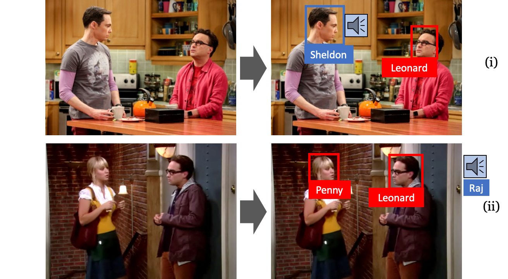
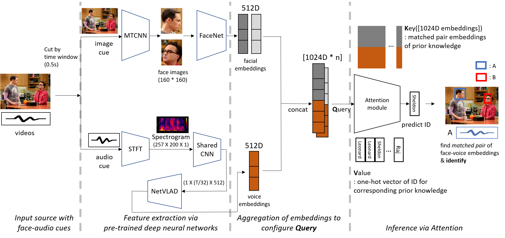
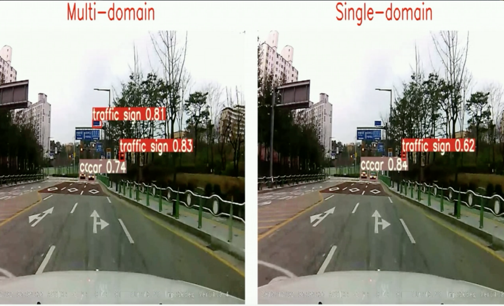
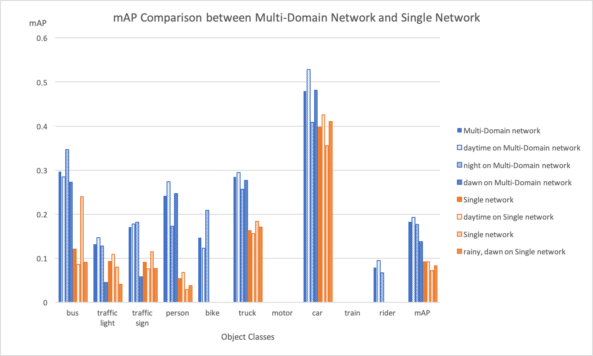
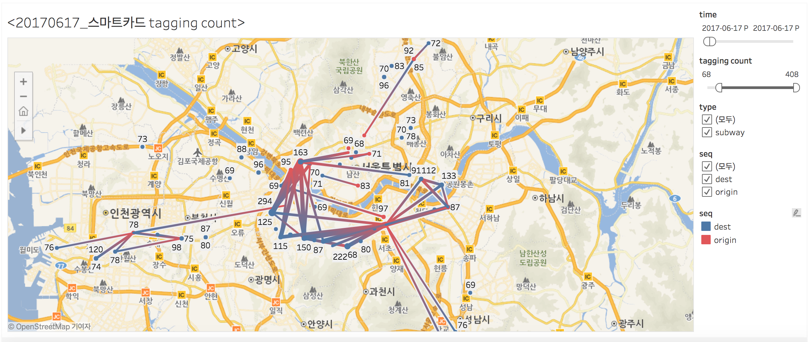

Live As Greedy: local optimal을 선택하다 보면 결국 global optimal에 도달하는 greedy algorithm의 풀이 방식처럼, 현재의 위치에서 최선을 다하면 결국 원하는 목표에 도달할 수 있다는 motto를 가지며 새로운 것에 대한 배움을 즐기는 엔지니어입니다.
Education
2017.03 - 2020.02 , M.S, Electrical & Computer Engineering in Seoul National University(In-memory Database Lab)
2013.03 - 2017.02 , B.S, Electrical & Computer Engineering in Seoul National University
▲ Overall architecture of attention-based speaker naming method
영화나 드라마에서 화자의 얼굴을 localize하고, face-voice feature embedding을 활용하여 화자의 ID를 식별하는 speaker naming task 수행
speaker naming task를 수행하는 기존의 gradient-based method 방식과 달리, attention module을 이용하여 gradient update process 없이 prior knowledge와 target data 간의 similarity의 linear combination을 통한 target data의 identification을 수행하는 방법 제시
기존의 방식은 모델을 훈련시키기 위해 충분한 training data와 긴 training time이 소요되는 단점이 있었으나, 본 논문에서 제시한 방법을 통해 비슷한 수준의 accuracy를 유지하면서 model training time을 크게 단축시킴(10x-100x).
gradient-based method에서 사용된 것보다 적은 수의 training data(5 face-voice pairs per ID)만을 이용하여 모델 구축 가능
모델이 배포된 이후에 추가적으로 얻게 되는 새로운 데이터를 attention module에 추가하여 knowledge base로 활용하는 online adaptation 가능
2019, Multi-Domain Networks for Object Detection in Road Environment
Profile
표정우(Jungwoo Pyo)
1994.05.12
Github: https://github.com/jw-pyo
Homepage: https://jw-pyo.github.io
Live As Greedy: local optimal을 선택하다 보면 결국 global optimal에 도달하는 greedy algorithm의 풀이 방식처럼, 현재의 위치에서 최선을 다하면 결국 원하는 목표에 도달할 수 있다는 motto를 가지며 새로운 것에 대한 배움을 즐기는 엔지니어입니다.
Education
Career & Internship
Projects


▲ Overall architecture of attention-based speaker naming method


▲ mAP comparison between multi-domain network and single-domain network

▲ example of crowd's subway trajactory visualization based on smartcard data
Skills & Experiences
Publications